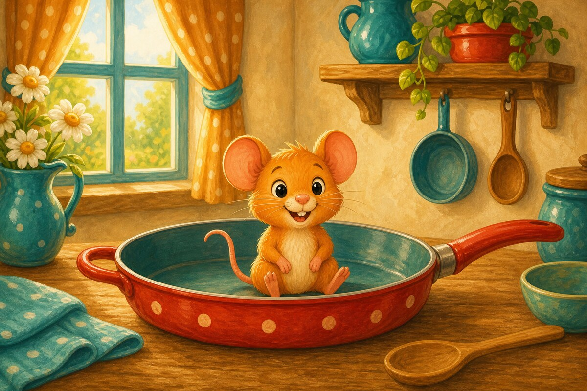
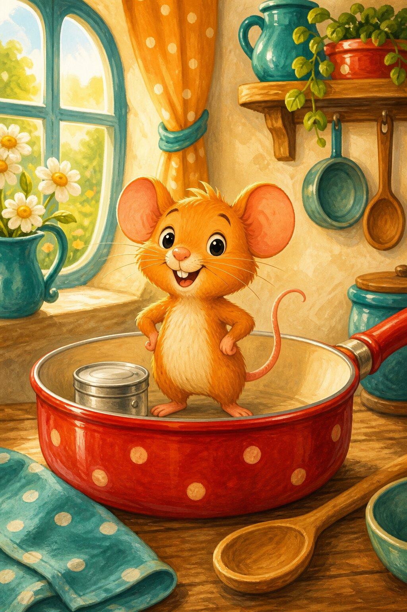
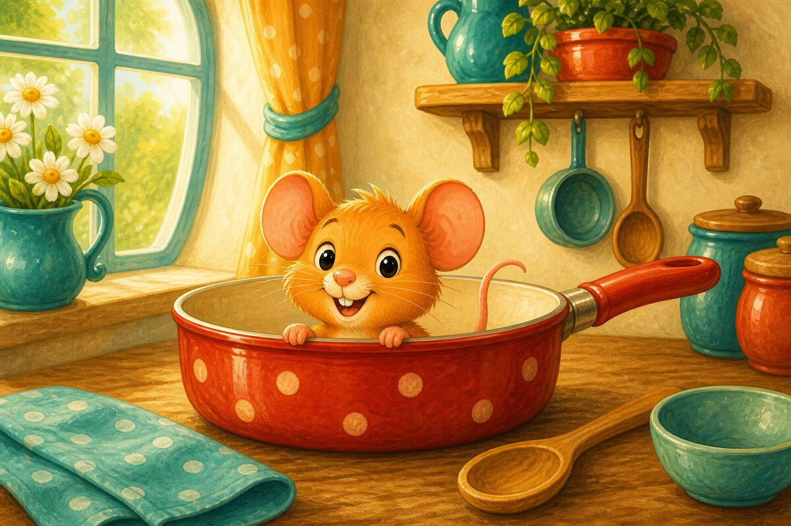
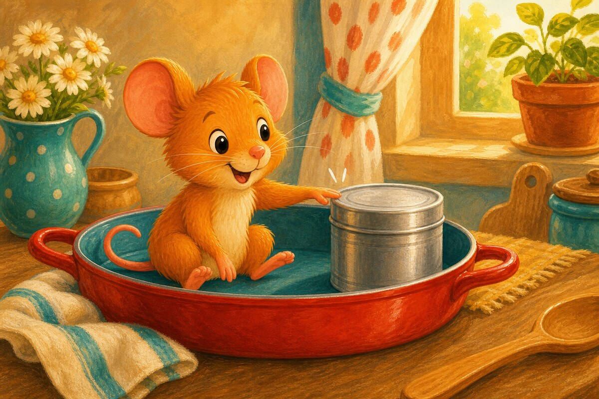
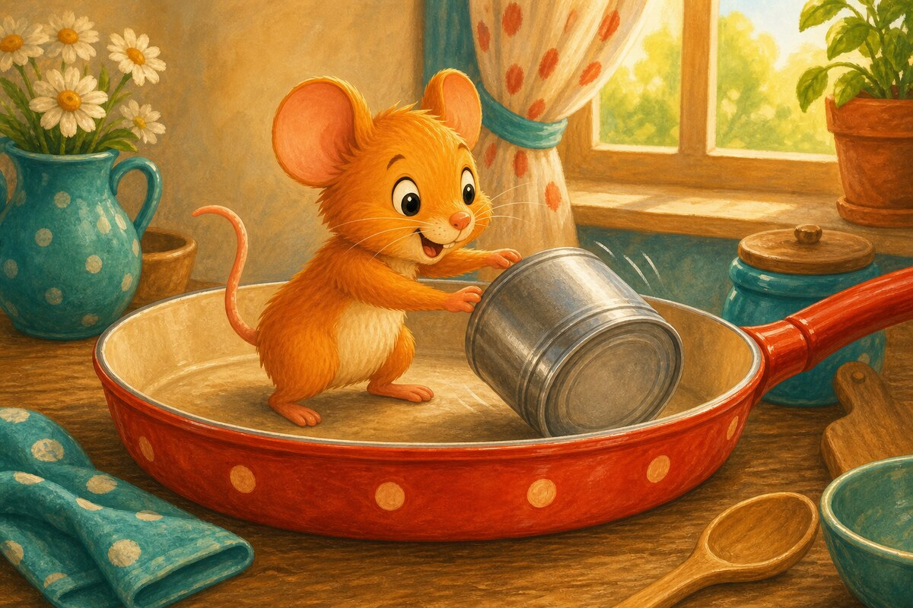
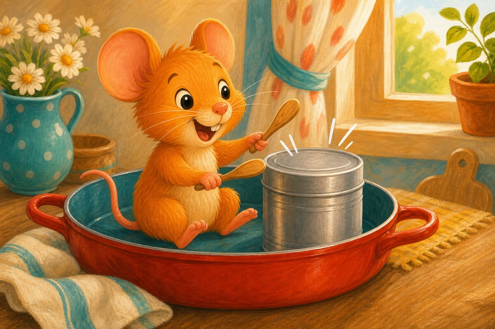
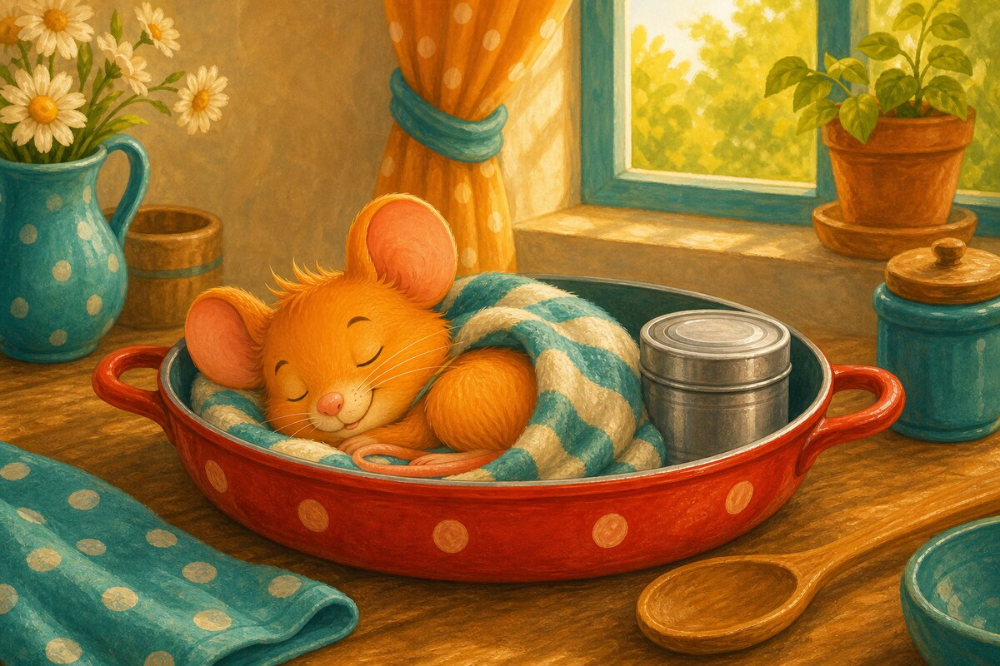

Page 1 of 6
Pip sits.
A six-page first read-it-myself story using the letter sounds s, a, t, p, i and n.


Pip sits.

Pip is in a pan.

Pip taps a tin.

Pip tips the tin.

Tap, tap, tap!

Pip naps.
The tin. Can you sound out t-i-n?
SnackPack ABC & Alphabet continues with letter activities, read-together stories and more early phonics practice.